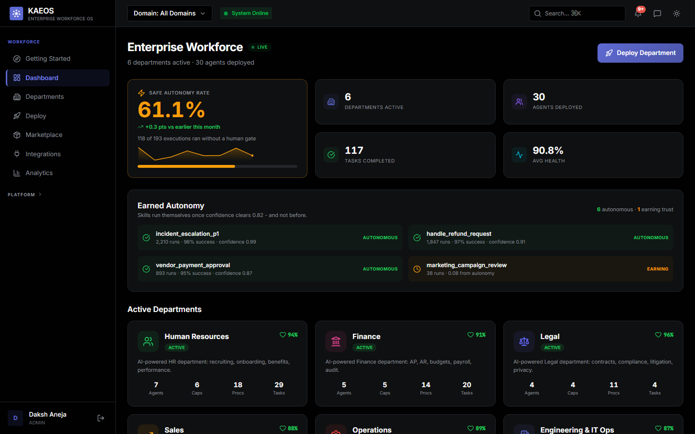
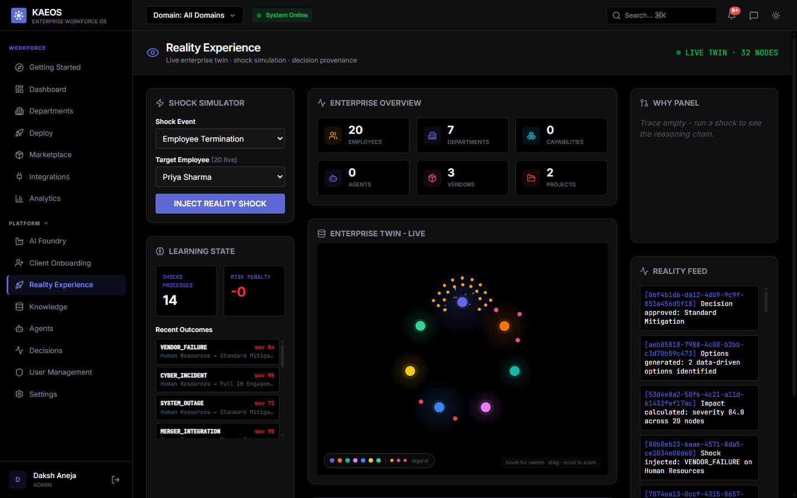
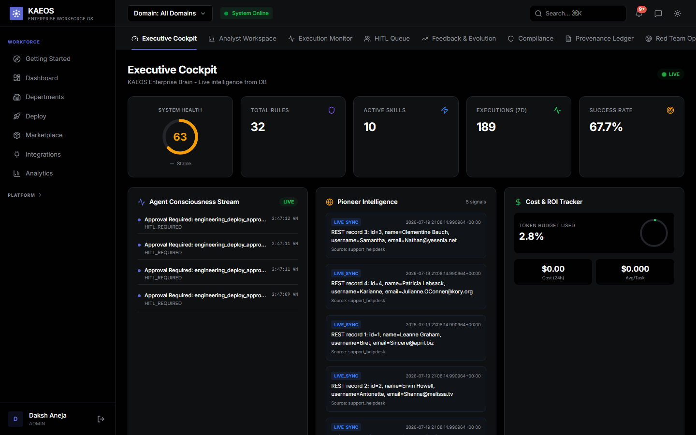

Open source · Local-first · Governed
KAEOS runs whole company departments with AI that does the work: triages the incident, reviews the pull request, scores the deal, flags the late invoice. Every action passes seven gates before it fires, and every decision lands in a tamper-evident ledger.
The problem
Enterprises are not blocked from using AI by capability. They are blocked by accountability. The question that kills every pilot is not "can the model do it". It is "when it acts on its own and we get audited, how do we explain it?"
How it works
GitHub, Jira, PagerDuty, Workday, SAP, Salesforce, Zendesk and more. 22 live adapters, each with a trust weight: systems of record outrank wikis, and wikis outrank chat.
Pick a pack, click deploy. Specialist agents read the real work and act on it through one governed pipeline. Production deploys and customer documents always stop for a human.
The safe autonomy rate: the share of real work completed with no human in the loop, at a fixed error budget, trending over time. Computed from real executions, never invented.
Every action, one pipeline
Compliance here is not a system prompt. It is code that runs before the model is called, so it cannot be argued with, jailbroken, or forgotten.
The amber gate is the point. Decisions above the confidence threshold flow through autonomously. Anything below it, and every high-consequence action class like a production deploy or a customer document, stops there until a human signs off. A weaker model earns a lower ceiling, which routes more of its decisions to people, automatically.
The product, live



Seven departments
Honest by design
No invented ROI. Metrics KAEOS cannot measure return null with a note, instead of a flattering guess.
Validated on real enterprise data. On real accounts receivable histories it predicts late payment at 81 percent against a 64 percent baseline. The results that miss baseline are reported too, not hidden.
Isolation the database enforces. Postgres row-level security refuses to return another tenant's rows even to an unfiltered query, proven by cross-tenant denial tests in the suite.
Bring any model, keep the guarantees. KAEOS probes whatever model you configure and caps the confidence its decisions may claim, so a weaker model automatically routes more work to humans.
Local-first inference. Routine decisions run on a local model. A data residency mode pins everything in-region, and PII is scrubbed before any cloud call.
Backend, frontend, the seven departments, the gate pipeline, the ledger, and 426 end-to-end tests. Read it, run it, audit it.
github.com/Daksh-Aneja-Projects/KAEOS